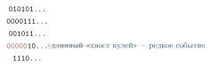
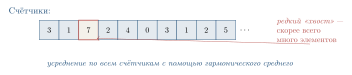
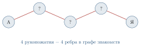

4.6 Счётчики с короткой памятью HyperLogLog и эксперимент Стенли Мильграма
В этом, заключительном параграфе главы мы рассмотрим ещё один сюжет на стыке теории чисел, теории вероятностей и информатики — задачу, в которой важно подсчитывать число различных объектов в огромном потоке данных, не имея возможности хранить их все. Это пригодится для задачи, на первый взгляд несвязанной с криптографией: измерения «социальных расстояний» в больших сетях, и проверки знаменитой гипотезы Стенли Мильграма о шести рукопожатиях.
Изложение в этом параграфе опирается на главу 7 книги Литвак и Райгородского «Кому нужна математика?»[^2], которую мы рекомендуем для самостоятельного изучения.
Задача подсчёта различных элементов
Представьте, что вы работаете в большой интернет-компании и хотите узнать: сколько уникальных пользователей зашло сегодня на сайт? Не общее число обращений (его легко посчитать инкрементируя счётчик при каждом запросе), а именно различных людей.
Точное решение. Простое и очевидное: завести множество (например, хеш-таблицу из §6.5), и при каждом приходящем идентификаторе пользователя проверять, есть ли он там; если нет — добавить и увеличить счётчик. По окончании дня размер множества — ответ.
Проблема. Если число уникальных пользователей — сотни миллионов или миллиарды, такая таблица занимает гигабайты памяти. Для одной задачи на одном сервере — допустимо. А если таких задач тысячи, и каждая на каждом из тысяч серверов? Память становится узким местом.
Возникает естественный вопрос: можно ли подсчитать число различных элементов в потоке приближённо, но используя гораздо меньше памяти? Например, дать ответ с относительной погрешностью \pm 2\%, заняв всего несколько килобайт?
Удивительно, но ответ положительный. И построение такого алгоритма опирается на красивые идеи теории вероятностей и — что нам особенно интересно — использует хеш-функции, родственные тем, что мы изучали в §6.5.
Идея: «самый длинный хвост нулей»
Алгоритм, который мы сейчас опишем (он называется HyperLogLog, предложен Филиппом Флажоле и его коллегами в 2007 году), основан на одной красивой вероятностной идее.
Пусть у нас есть «хорошая» хеш-функция h, которая для каждого входного объекта (например, идентификатора пользователя) выдаёт случайную на вид последовательность из L битов. Слово «случайную» означает: для разных входов биты выглядят как независимые подбрасывания монеты[^3].
Наблюдение. Если число h(x) действительно ведёт себя случайно, то рассмотрим, сколько нулей подряд стоит в начале двоичной записи h(x).
Вероятность, что первый бит — ноль: 1/2.
Вероятность, что первые два бита — нули: 1/4.
Вероятность, что первые k битов — нули: 1/2^k.
Наглядно эта закономерность показана на рис. 6.17.

Иначе говоря, если в потоке встречается элемент x, такой что h(x) начинается, скажем, с 20 нулей подряд, это значит, что в потоке скорее всего побывало порядка 2^{20} \approx 10^6 различных элементов — иначе крайне маловероятно увидеть такое редкое событие.
Базовый алгоритм («одиночный счётчик»).
Заведём одну переменную M = 0.
Для каждого приходящего элемента x потока:
вычислим h(x);
посчитаем число \rho(h(x)) — длину начального блока нулей в h(x), плюс единица;
обновим M \leftarrow \max(M, \rho(h(x))).
На выходе оценим число различных элементов как \widehat{n} = 2^M.
Память. Чтобы хранить M от 0 до L (где L — длина хеша, скажем, 32 бита), достаточно шести битов памяти. Шесть битов — чтобы оценить число различных элементов в потоке любой длины!
Проблема. Эта оценка очень шумная: одно «случайно длинное» обнуление сбивает её в большую сторону, а его отсутствие — в меньшую. Дисперсия чудовищная.
Идея «несколько счётчиков»
Чтобы сгладить случайные колебания, разделим поток на много подпотоков и усредним результаты. Это и есть алгоритм HyperLogLog.
Выберем число b — скажем, b = 10, — и заведём 2^b = 1024 независимых счётчика M_0, M_1, \dots, M_{2^b - 1}. Каждый счётчик — 6 битов.
Для каждого приходящего элемента x:
вычислим h(x) длины L;
первые b битов h(x) интерпретируем как номер счётчика j, 0 \le j < 2^b;
к остальным L - b битам применяем правило: \rho = длина начального блока нулей плюс 1;
обновляем: M_j \leftarrow \max(M_j, \rho).
На выходе оцениваем
\widehat{n} = \alpha_b \cdot 2^b \cdot \left( \frac{1}{2^b} \sum_{j=0}^{2^b-1} 2^{-M_j} \right)^{-1},
где \alpha_b — известная константа корректировки (для b = 10 примерно 0.7213).
Почему так? Формула в третьем шаге — это гармоническое среднее величин 2^{M_j}, а не простое арифметическое. Гармоническое среднее устойчиво к выбросам (одно случайно большое M_j его существенно не искажает) — именно поэтому HyperLogLog так точен.
Относительная погрешность оценки \widehat{n} по сравнению с истинным значением n имеет порядок 1.04/\sqrt{2^b}. При b = 10 это примерно 3.25\%; при b = 14 — около 0.81\%.
Память. При b = 14 имеется 2^{14} = 16\,384 счётчиков по 6 битов — всего \approx 12 КБ. И этим объёмом мы оцениваем число уникальных элементов в потоке длиной до \approx 10^{18} с точностью около 1\%! (рис. 6.18)

HyperLogLog встроен в Redis (популярную систему кэширования), в Google BigQuery (язык запросов к огромным базам данных), в систему аналитики ВКонтакте, в инфраструктуру PostgreSQL и многих других сервисов. Когда вы видите в личном кабинете рекламной системы оценку «охват: 3,5 млн уникальных пользователей», очень вероятно, что под капотом работает именно этот алгоритм.
Эксперимент Стенли Мильграма
Теперь, когда у нас в руках мощный инструмент для подсчёта уникальных объектов, обратимся к классической задаче из социологии, которую Литвак и Райгородский подробно разбирают в главе 7 своей книги.
Историческое введение. В 1960-х годах американский социальный психолог Стенли Мильграм (1933–1984) задался необычным вопросом: насколько на самом деле «велик» мир? Точнее: если выбрать наугад двух человек на разных концах страны, через сколько посредников можно их связать?
В 1967 году Мильграм провёл свой знаменитый эксперимент. Участникам в Канзасе и Небраске были даны письма с просьбой передать их некоему адресату в Бостоне, причём нельзя было отправлять напрямую — только через личного знакомого, который, как кажется участнику, может быть ближе к получателю; тот, в свою очередь, выбирал следующего знакомого, и так далее.
Удивительный результат. Большинство писем, дошедших до адресата, преодолевали путь в среднем за 5–6 пересылок. Так родилась знаменитая гипотеза «шести рукопожатий»: между любыми двумя людьми на Земле в среднем стоит лишь шесть посредников.
Идея «малого мира» проникла в массовую культуру: пьеса Джона Гуэра «Six Degrees of Separation» (1990), фильм с тем же названием, многочисленные «эстафеты знакомств». В науке термин small-world network стал важным понятием в теории графов и сетевой социологии.
Современная проверка. Эксперимент Мильграма страдал серьёзными методологическими дефектами: 1/ подавляющее большинство писем (около 80%) до адресата так и не дошли; 2/ выборка была очень ограниченной (всего около 300 писем); 3/ «знакомые» отбирались не случайно, а с предположением о близости к получателю.
В современную эпоху, когда подавляющая часть знакомств и контактов перешла в цифровой формат, задачу можно проверить иначе: построить граф знакомств целиком и измерить кратчайшие расстояния. Именно это в 2011 году проделали исследователи в рамках одной известной социальной сети — они проанализировали данные всех её пользователей (на тот момент — около 720 миллионов человек) и более 69 миллиардов «дружеских связей».
Что они обнаружили. Средняя длина кратчайшего пути между двумя случайно выбранными пользователями оказалась равной 4,74 рукопожатия. Иначе говоря, в современных социальных сетях гипотеза Мильграма не просто подтверждается, а даже улучшается: между двумя пользователями стоит в среднем менее пяти промежуточных знакомых, а не шесть. Принято округлять это число до 4 — отсюда выражение «четыре рукопожатия» (рис. 6.19).

При чём здесь HyperLogLog?
Возникает вопрос: как именно вычислить среднюю длину кратчайшего пути в графе из 720 миллионов вершин и 69 миллиардов рёбер? Прямой подсчёт всех пар (а их \binom{720{\cdot}10^6}{2} \approx 2{,}6 \cdot 10^{17}) непосильно даже для самых мощных кластеров.
Здесь и приходит на помощь HyperLogLog (а также его «родственники» — алгоритмы вероятностного подсчёта). Идея, идущая в реальном анализе, такова:
Для каждой вершины v заведём HyperLogLog-счётчик C_v.
Вначале добавим в C_v только саму вершину v. То есть |C_v| = 1.
На шаге t = 1, 2, \dots, T:
для каждой вершины v обновим C_v \leftarrow C_v \cup \bigcup_{u: (u,v) \text{ -- ребро}} C_u^{(t-1)},
то есть в C_v добавляются все вершины, до которых дошли соседи v на предыдущем шаге.
Величина |C_v| после t шагов — это число вершин, до которых от v существует путь длины \le t.
Где экономия памяти. Если бы мы хранили C_v как точное множество, для одной вершины пришлось бы выделить до 720 миллионов битов памяти — 90 мегабайт. Умножим на 720 миллионов вершин — получим 65 петабайт. Невозможно.
А поскольку HyperLogLog-счётчик занимает 12 КБ на вершину, всё хранилище умещается в 720{\cdot}10^6 \cdot 12 КБ \approx 8{,}6 ТБ — объём, который уже умещается в один большой серверный кластер.
Объединение HyperLogLog-счётчиков. У алгоритма есть ещё одно прекрасное свойство: HLL-счётчики можно объединять. Если C_1 оценивает мощность множества A, а C_2 — мощность B, то новый счётчик C, у которого C[j] = \max(C_1[j], C_2[j]), оценивает мощность A \cup B. Это позволяет распределять вычисления по тысячам машин и в конце «склеивать» результаты.
Современное измерение «социального расстояния» в больших сетях — это композиция нескольких идей:
теория графов даёт постановку задачи (кратчайшие расстояния);
теория чисел и хеширование (§6.5) обеспечивают «равномерное» распределение элементов;
теория вероятностей и алгоритм HyperLogLog позволяют оценивать мощности множеств за десятки тысяч раз меньшую память;
распределённые вычисления позволяют разнести работу по тысячам компьютеров.
От социологии — к стратегическим выводам
Эксперимент Мильграма и его цифровое продолжение — не просто забавный факт. Из него следуют важные вещи:
Информация распространяется быстро. Новость, попавшая в социальную сеть, при равномерной передаче «через знакомых» теоретически охватывает всю сеть за 4–5 шагов. На практике это и наблюдается с вирусными мемами.
Эпидемии распространяются быстро. В аналогичной модели заражения болезнь, передающаяся при контакте, охватывает большую долю населения за считанные «волны» контактов.
Цифровая приватность хрупка. Если ваш друг знает всё о вас, его друг — через пять рукопожатий — статистически связан с миллионами людей. Любая утечка приватной информации распространяется по сети быстрее, чем кажется.
Поиск работы и идей. Знаменитая работа социолога Марка Грановеттера 1973 года показала, что новые контакты, идеи, рабочие места часто приходят к нам не от близких друзей, а от «слабых связей» — знакомых второго и третьего уровня. Малый диаметр сети объясняет, почему такая стратегия работает.
Математическая модель социальной сети, объясняющая эффект малого мира, была построена Дунканом Уоттсом и Стивеном Строгацем в 1998 году. Они показали: если у регулярной решётки добавить совсем немного случайных «дальних» рёбер, диаметр графа резко падает с линейного до логарифмического. Социальная сеть устроена именно так: большинство ваших связей — локальные (одноклассники, коллеги), но достаточно нескольких «дальних» — например, родственника в другом городе или знакомого по интернету, — чтобы вся сеть оказалась «компактной».
Объясните, почему в наивном алгоритме одиночного счётчика оценка \widehat{n} = 2^M имеет такую большую дисперсию.
Пусть хеш-функция выдаёт строки по 8 битов. Сколько (в среднем) различных элементов нужно подать на вход, чтобы хотя бы у одного оказалось 6 нулей в начале хеша?
Объясните, почему гармоническое среднее устойчивее к выбросам, чем арифметическое. Приведите пример набора чисел, в котором эти средние существенно различаются.
Оцените, сколько памяти займёт HyperLogLog при b = 12, и какова при этом ожидаемая относительная погрешность.
* Почему в алгоритме оценки расстояний в графе нельзя просто хранить |C_v| как число (это же 4 байта)? Зачем хранить целый HLL-счётчик?
* Среднее число рукопожатий в графе оценено как 4{,}74. Что в этой формулировке играет роль случайной величины, а что — константы? Какой стандартной операции теории вероятностей соответствует «среднее число»?